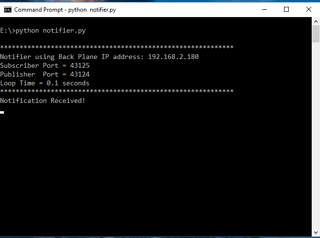

Multi-Backplane Applications
For the vast majority of Banyan applications, a single backplane is all that is needed to handle all the application's messaging needs. When using a single backplane configuration, there is no need to manually perform message routing, since all components automatically connect to a common backplane.
However, there are occasions where you might like to design your component so that it can communicate with more than one backplane. Some possible scenarios for this configuration would be to provide message load balancing or a better separation of operational concerns. To support these types of configurations, a new base class, BanyanBaseMulti, is required.
The Banyan Base Multi Base Class
In many ways, the BanyanBaseMulti base class is similar to the BanyanBase class, but there is one significant difference. A BanyanBaseMulti component requires that a backplane routing table be provided at initialization. This table is known as the routing specification file.
Note: BanyanBase and BanyanBaseMulti components may communicate with each other without restriction. No coding changes or message format changes are required.
The Routing Specification File For BanyanBaseMulti
Every BanyanBaseMulti component requires access to a unique comma-delimited routing specification file. The name and path of this file is a required component input parameter.
Let's explore the format of the specification file.
The header and first line of a routing specification file is:
backplane_name,ip_address,subscriber_port,subscriber_topic,publisher_port
The backplane_name field is a unique ID string given to each of the connected backplanes. The IDs are used to de-reference publisher and subscriber connections.
The ip_address field is the IP address of the given backplane. Backplanes that share a single IP address are differentiated by having unique subscriber and publisher ports.
The subscriber_port specifies the subscriber port for the given backplane.
The subscriber_topic is an optional Python list of subscriber topics established at the instantiation of the component. If a single topic is to be specified, it still must be entered as a Python list.
IMPORTANT NOTE: Even though the topics are strings, the individual topic strings must not be enclosed in quotes. Instead, the whole list, including the brackets, is enclosed in quotes. Also, there must not be any spaces after the commas. For example, if the topics are start, and finish, the subscriber_topic field is specified as: "[start,finish]"
The publisher_port specifies the publisher port for the given backplane.
Here is sample of a routing specification file for a component that connects to 5 backplanes.
backplane_name,ip_address,subscriber_port,subscriber_topic,publisher_port
BP1,192.168.2.194,43127,"[reply]",43126
BP2,192.168.2.194,43125,"[reply]",43124
BP3,192.168.2.177,43125,"[]",43124
BP4,192.168.2.199,43125,"[run_motors,light_leds]",
BP5,192.168.2.133,,"[run_motors,light_leds]",43124
Let's launch a sample BanyanBaseMulti component called MultiDriver. When the component initializes, it will read the routing specification file, and print out its interpretation of that file as its console header. Let's look at that console header.
Using Backplane Descriptor File: multi_driver_spec.csv
************************************************************
MultiDriver using BP1 Black plane at IP Address: 192.168.2.194
Subscriber Port = 43127
Subscribed to topic: reply
Publisher Port = 43126
MultiDriver using BP2 Black plane at IP Address: 192.168.2.194
Subscriber Port = 43125
Subscribed to topic: reply
Publisher Port = 43124
MultiDriver using BP3 Black plane at IP Address: 192.168.2.177
Subscriber Port = 43125
Subscribed to topic:
Publisher Port = 43124
MultiDriver using BP4 Black plane at IP Address: 192.168.2.199
Subscriber Port = 43125
Subscribed to topic: run_motors
Subscribed to topic: light_leds
Publisher Port = None Specified
MultiDriver using BP5 Black plane at IP Address: 192.168.2.133
Subscriber Port = None Specified
Publisher Port = 43124
Loop Time = 0.1 seconds
************************************************************
Notice that for BP1 and BP2, all fields are specified. Since they share a common IP address, their ports have different values.
For BP3, no topic list was specified, and therefore the "Subscribed to topic" for BPI3 shows no topics.
BP4 specifies multiple subscriber topics and a subscriber port, but no publisher port. This is a valid case when the component does not publish any messages.
BP5 has no subscriber port specified and no topics specified. Because there is no subscriber port, topics are not listed. For BP5, this component acts only as a publisher.
A simple working example is discussed below if you would like to try using BanyanBaseMulti.
The Python Banyan Multi Base Class Code In Detail
Lines 1 through 66 should seem very similar to those for the BanyanBase base class.
1 """
2 banyan_base_multi.py
3
4 Copyright (c) 2016 - 2019 Alan Yorinks All right reserved.
5
6 Python Banyan is free software; you can redistribute it and/or
7 modify it under the terms of the GNU AFFERO GENERAL PUBLIC LICENSE
8 Version 3 as published by the Free Software Foundation; either
9 or (at your option) any later version.
10 This library is distributed in the hope that it will be useful,
11 but WITHOUT ANY WARRANTY; without even the implied warranty of
12 MERCHANTABILITY or FITNESS FOR A PARTICULAR PURPOSE. See the GNU
13 General Public License for more details.
14
15 You should have received a copy of the GNU AFFERO GENERAL PUBLIC LICENSE
16 along with this library; if not, write to the Free Software
17 Foundation, Inc., 51 Franklin St, Fifth Floor, Boston, MA 02110-1301 USA
18
19 """
20 from __future__ import unicode_literals
21
22 # Use argparse and signal if you wish to implement the argparse
23 # code located at the bottom of this file
24 # import argparse
25 # import signal
26
27 import csv
28 import sys
29 import time
30 import itertools
31 import msgpack
32 import msgpack_numpy as m
33 import umsgpack
34 import zmq
35 import os
36
37
38 # noinspection PyMethodMayBeStatic
39 class BanyanBaseMulti(object):
40 """
41
42 This is the base class for Python Banyan components that wish to connect to multiple back planes.
43 It requires the user to create a .csv descriptor file to describe the back planes and their
44 addresses/ports and subscription topics.
45
46 The .csv file has the following format. This line must be the first line in the file:
47
48 backplane_name,ip_address,subscriber_port,subscriber_topic,publisher_port
49
50 backplane_name: a unique identifier string for backplane - for informational purposes only
51 ip_address: IP address of the computer that the backplane is running on
52 subscriber_port: port number assigned to the backplane's subscriber port
53 subscriber_topic: this is an optional list of subscription topics
54 publisher_port: port number assigned to the backplane's publisher port
55
56
57 There should be an entry in this file for each backplane that the component needs to connect to.
58
59 This class encapsulates zeromq and message pack functionality. Its methods should be overridden by the user
60 in the derived class to meet the needs of the component.
61
62 To import into the derived class use:
63
64 from python_banyan.banyan_base_multi import BanyanBaseMulti
65
66 """
__init__
The __init__ method requires the name and path to a routing specification file. Similar to a BanyanBase component, it accepts a process name, a loop_time, and a flag to process numpy data.
Lines 87 and 88 establish "constants" for the socket types. This is used in the find_socket method discussed below.
Lines 94 and 95 verify that a routing specification file can be found.
Lines 100 through 108 establish instance variables used by the class.
Lines 118 through 173, read and validate the routing specification file and print out the component's "header" data to the console.
68 def __init__(self, back_plane_csv_file=None, process_name='None',
69 loop_time=.1, numpy=False, connect_time=0.3):
70 """
71 The __init__ method sets up all the ZeroMQ "plumbing"
72
73 :param back_plane_csv_file: full path to .csv file with backplane descriptors
74
75 :param process_name: identifier for your component printed at startup on the console
76
77 :param loop_time: receive loop sleep time
78
79 :param numpy: Set true if you wish to include numpy matrices in your messages
80
81 :param connect_time: a short delay to allow the component to connect to the Backplane
82
83 :return:
84 """
85
86 # socket type - used for calls to find_socket
87 self.SUB_SOCK = 0
88 self.PUB_SOCK = 1
89
90 if back_plane_csv_file is None:
91 raise ValueError('You must specify a valid .csv backplane descriptor file')
92
93 # file specified, make sure it exists
94 if not os.path.isfile(back_plane_csv_file):
95 raise ValueError("Can't find backplane configuration file")
96
97 if process_name == 'None':
98 print('Warning: No Process Name Was Specified')
99
100 self.numpy = numpy
101
102 self.connect_time = connect_time
103
104 # if using numpy apply the msgpack_numpy monkey patch
105 if numpy:
106 m.patch()
107
108 self.loop_time = loop_time
109
110 # get a zeromq context
111 self.my_context = zmq.Context()
112
113 # a list of dictionaries describing connections to the back planes
114 self.backplane_table = []
115
116 print("\nUsing Backplane Descriptor File: ", back_plane_csv_file)
117
118 with open(back_plane_csv_file) as csvfile:
119 reader = csv.DictReader(csvfile)
120 print('\n************************************************************\n')
121 for row in reader:
122 # make sure backplane name is unique
123 if any(d['backplane_name'] == row['backplane_name'] for d in self.backplane_table):
124 raise RuntimeError('Duplicate Back Plane Name - check your .csv file')
125
126 print(process_name + ' using ' + row['backplane_name'] + ' Black plane at IP Address: ' +
127 row['ip_address'])
128
129 # setup a publisher and subscriber for each backplane
130 subscriber = None
131 if row['subscriber_port']:
132 subscriber = self.my_context.socket(zmq.SUB)
133 connect_string = "tcp://" + row['ip_address'] + ':' + row['subscriber_port']
134 subscriber.connect(connect_string)
135
136 publisher = None
137 if row['publisher_port']:
138 publisher = self.my_context.socket(zmq.PUB)
139 connect_string = "tcp://" + row['ip_address'] + ':' + row['publisher_port']
140 publisher.connect(connect_string)
141
142 # get topics and subscribe to them
143 # test that topic string has a leading and trailing []
144 if row['subscriber_port']:
145 print(' Subscriber Port = ' + row['subscriber_port'])
146 topic_list = row['subscriber_topic']
147 if '[' not in topic_list:
148 raise RuntimeError('Topic field must begin with "[" and end with "]" ')
149 if ']' not in topic_list:
150 raise RuntimeError('Topic field must begin with "[" and end with "]" ')
151
152 # make sure that the topic string does not contain a space character
153 if ' ' in topic_list:
154 raise RuntimeError('Topics may not contain a space character')
155
156 topic_list = topic_list[1:-1].split(',')
157
158 # subscribe to topics in list
159 for t in topic_list:
160 print(' Subscribed to topic: ' + t)
161 self.set_subscriber_topic(t, subscriber)
162 else:
163 print(' Subscriber Port = None Specified')
164
165 if row['publisher_port']:
166 print(' Publisher Port = ' + row['publisher_port'])
167 else:
168 print(' Publisher Port = None Specified')
169
170 # update backplane table with new entry
171 self.backplane_table.append(
172 {'backplane_name': row['backplane_name'], 'subscriber': subscriber,
173 'publisher': publisher})
174
175 # wait for the last Backplane TCP connection
176 time.sleep(self.connect_time)
177
178 print()
179 print('Loop Time = ' + str(loop_time) + ' seconds\n')
180 print('************************************************************')
find_socket
The find_socket method accepts a backplane name specified in the routing specification table and a socket type (publisher or subscriber) as input parameters. It returns a socket connection for publishing messages to or receiving messages from the specified backplane.
182 def find_socket(self, backplane, socket_type):
183 """
184 Find a publisher or subscriber in the backplane table and return a ZMQ socket reference
185
186 :param backplane: backplane name entry in table
187
188 :param socket_type: publisher or subscriber
189
190 :return: socket reference or None
191 """
192 valid_socket_types = [self.PUB_SOCK, self.SUB_SOCK]
193
194 if socket_type in valid_socket_types:
195 try:
196 entry = next(item for item in self.backplane_table if item.get("backplane_name") == backplane)
197 if socket_type == self.PUB_SOCK:
198 rval = entry['publisher']
199 else:
200 rval = entry['subscriber']
201 return rval
202
203 except StopIteration:
204 raise StopIteration(backplane + ' not found in table.')
205 else:
206 raise ValueError(socket_type + ' is an illegal socket_type')
set_subscriber_topic
The set_subscriber_topic method associates a subscription topic with the given subscriber_socket connection.
208 def set_subscriber_topic(self, topic, subscriber_socket):
209 """
210 This method sets a subscriber topic.
211
212 You can subscribe to multiple topics by calling this method for
213 each topic.
214
215 :param topic: A topic string
216
217 :param subscriber_socket: subscriber socket
218
219 :return:
220 """
221 if sys.version_info[0] < 3:
222 try:
223 topic = topic.encode()
224 except AttributeError:
225 raise TypeError('Publish topic must be python_banyan string', 'topic')
226 if not type(topic) is str:
227 raise TypeError('Subscriber topic must be python_banyan string')
228
229 if subscriber_socket:
230 subscriber_socket.setsockopt(zmq.SUBSCRIBE, topic.encode())
231
232 else:
233 raise ValueError('set_subscriber_topic: socket is None')
234
unsubscribe_topic
The unsubscribe_topic method allows one to unsubscribe from a topic for a backplane subscriber socket connection.
235 def unsubscribe_topic(self, topic, subscriber_socket):
236 """
237 This method un-subscribes from a topic.
238
239 :param topic: A topic string
240
241 :param subscriber_socket: subscriber socket
242
243 :return:
244 """
245 if sys.version_info[0] < 3:
246 try:
247 topic = topic.encode()
248 except AttributeError:
249 raise TypeError('Publish topic must be python_banyan string', 'topic')
250 if not type(topic) is str:
251 raise TypeError('Subscriber topic must be python_banyan string')
252
253 if subscriber_socket:
254 subscriber_socket.unsubscribe(topic.encode())
255
256 else:
257 raise ValueError('set_subscriber_topic: socket is None')
publish_payload
The publish_payload method is very similar to that for BanyanBase.
IMPORTANT NOTE: If the topic string is "BROADCAST," then the message is published to all backplanes containing publisher ports specified in the routing specification file.
259 def publish_payload(self, payload, publisher_socket, topic=''):
260 """
261 This method will publish a python_banyan payload and its associated topic
262
263 :param payload: Protocol message to be published
264
265 :param publisher_socket: Publisher socket - handle to socket or "BROADCAST" to send to
266 all connected publisher sockets
267
268 :param topic: A string value for message topic
269
270 :return:
271 """
272 if sys.version_info[0] < 3:
273 try:
274 topic = topic.encode()
275 except AttributeError:
276 raise TypeError('Publish topic must be python_banyan string', 'topic')
277 if not type(topic) is str:
278 raise TypeError('Publish topic must be python_banyan string', 'topic')
279
280 # create python_banyan message pack payload
281 if self.numpy:
282 message = msgpack.packb(payload, default=m.encode)
283 else:
284 message = umsgpack.packb(payload)
285
286 pub_envelope = topic.encode()
287 if publisher_socket == "BROADCAST":
288 for element in self.backplane_table:
289 if element['publisher']:
290 element['publisher'].send_multipart([pub_envelope, message])
291 else:
292
293 if publisher_socket:
294 publisher_socket.send_multipart([pub_envelope, message])
295 else:
296 raise ValueError('Invalid publisher socket')
receive_loop
The receive_loop cycles through all of the backplane subscriber sockets to see if any messages need to be processed. If so, it calls the incoming_message_processing method.
298 def receive_loop(self):
299 """
300 This is the receive loop for zmq messages.
301
302 This method may be overwritten to meet the needs
303 of the application before handling received messages.
304
305 :return:
306 """
307 for element in itertools.cycle(self.backplane_table):
308 if element['subscriber']:
309 try:
310 data = element['subscriber'].recv_multipart(zmq.NOBLOCK)
311 if self.numpy:
312 payload = msgpack.unpackb(data[1], object_hook=m.decode)
313 self.incoming_message_processing(data[0].decode(), payload)
314 else:
315 self.incoming_message_processing(data[0].decode(), umsgpack.unpackb(data[1]))
316 except zmq.error.Again:
317 try:
318 time.sleep(self.loop_time)
319 except KeyboardInterrupt:
320 self.clean_up()
321 sys.exit(0)
322 except AttributeError:
323 raise
324
incoming_message_processing
This method needs to be overridden to handle the incoming messages.
325 def incoming_message_processing(self, topic, payload):
326 """
327 Override this method with a custom python_banyan message processor for subscribed messages
328
329 :param topic: Message Topic string
330
331 :param payload: Message Data
332
333 :return:
334 """
335 print('this method should be overwritten in the child class', topic, payload)
clean_up
The clean_up method iterates through all the backplanes and closes their connections.
337 def clean_up(self):
338 """
339 Clean up before exiting - override if additional cleanup is necessary
340
341 :return:
342 """
343 for element in self.backplane_table:
344 if element['publisher']:
345 element['publisher'].close()
346 if element['subscriber']:
347 element['subscriber'].close()
348 self.my_context.term()
A Simple Working Example
This section provides a simple demonstration of a Banyan application that makes use of the BanyanBaseMulti base class. For this example, 2 backplanes are invoked, each on a different computer. The example can be easily modified to run both backplanes on a single computer by adjusting the routing specification file's values.
In addition to the two backplanes, the application consists of three Banyan components. The first component is a reuse of echo_cmdline_client.py, and it resides on computer1. The second component, multi_echo_server.py derived from BanyanBaseMulti The third component, notifier.py, derived from BanyanBase, resides on computer2.
Backplane1 resides on computer1, and backplane2 resides on computer2.
The client publishes messages to backplane1, and the server echoes these messages back within backplane1. As each message is received by the server, it tests to see if the message number is 0. Message number 0 signals that this is the final message. If the message number is 0, the server then publishes a "notifier" message routed to backplane2.

The Notifier
The code for the Notifier is extremely simple. It registers to receive messages with a 'notice' topic and when a message is received, prints 'Notification Received':
1 """
2 notifier.py
3
4 Copyright (c) 2018 - 2019 Alan Yorinks All right reserved.
5
6 Python Banyan is free software; you can redistribute it and/or
7 modify it under the terms of the GNU AFFERO GENERAL PUBLIC LICENSE
8 Version 3 as published by the Free Software Foundation; either
9 or (at your option) any later version.
10 This library is distributed in the hope that it will be useful,
11 but WITHOUT ANY WARRANTY; without even the implied warranty of
12 MERCHANTABILITY or FITNESS FOR A PARTICULAR PURPOSE. See the GNU
13 General Public License for more details.
14
15 You should have received a copy of the GNU AFFERO GENERAL PUBLIC LICENSE
16 along with this library; if not, write to the Free Software
17 Foundation, Inc., 51 Franklin St, Fifth Floor, Boston, MA 02110-1301 USA
18
19 """
20 import sys
21 import time
22
23 from python_banyan.banyan_base import BanyanBase
24
25
26 class Notifier(BanyanBase):
27 """
28 This class is a simple Banyan echo server
29
30 """
31
32 def __init__(self, ):
33
34 # initialize the parent
35 super(Notifier, self).__init__(process_name='Notifier')
36
37 # allow time for base class to initialize publisher/subscriber connections
38 time.sleep(.3)
39
40 # subscribe to receive 'echo' messages from the client
41 self.set_subscriber_topic('notice')
42
43 # wait for messages to arrive
44 try:
45 self.receive_loop()
46 except KeyboardInterrupt:
47 self.clean_up()
48 sys.exit(0)
49
50 def incoming_message_processing(self, topic, payload):
51 """
52 Process incoming messages from the client
53 :param topic: message topic
54 :param payload: message payload
55 :return:
56 """
57 print('Notification Received!')
58
59
60 def notifier():
61 Notifier()
62
63
64 if __name__ == '__main__':
65 notifier()
The Echo Client
We are reusing the echo_cmdline_client unmodified.
The MultiEchoServer
The server is derived from BanyanBaseMulti. Let us begin by examining its associated routing specification file.
Routing Specification File
backplane_name,ip_address,subscriber_port,subscriber_topic,publisher_port
BP1,192.168.2.190,43125,"[echo]",43124
BP2,192.168.2.180,43125,"[]",43124
BP1 is the backplane that is running on 192.168.2.190 and the server subscribes to the echo topic on backplane1.
BP2 is the backplane that is running 192.168.2.180, and the server publishes notifier messages to backplane2.
The MultiEchoServer Code
Lines 39 and 42 establish the sockets for each of the backplanes. It uses the find_socket method to retrieve the publisher sockets for the backplanes. It uses the names of the backplanes from the routing specification file to retrieve the sockets.
Line 59 echoes the incoming messages from the client. If the message number is 0, then line 62 publishes a notice message to backplane2.
1 """
2 multi_echo_server.py
3
4 Copyright (c) 2016-2019 Alan Yorinks All right reserved.
5
6 Python Banyan is free software; you can redistribute it and/or
7 modify it under the terms of the GNU AFFERO GENERAL PUBLIC LICENSE
8 Version 3 as published by the Free Software Foundation; either
9 or (at your option) any later version.
10 This library is distributed in the hope that it will be useful,
11 but WITHOUT ANY WARRANTY; without even the implied warranty of
12 MERCHANTABILITY or FITNESS FOR A PARTICULAR PURPOSE. See the GNU
13 General Public License for more details.
14
15 You should have received a copy of the GNU AFFERO GENERAL PUBLIC LICENSE
16 along with this library; if not, write to the Free Software
17 Foundation, Inc., 51 Franklin St, Fifth Floor, Boston, MA 02110-1301 USA
18
19 """
20 import sys
21 import time
22
23 from python_banyan.banyan_base_multi import BanyanBaseMulti
24
25
26 class MultiEchoServer(BanyanBaseMulti):
27 """
28 This class is a simple Banyan echo server
29
30 """
31
32 def __init__(self, ):
33
34 # initialize the parent
35 super(MultiEchoServer, self).__init__(back_plane_csv_file='spec.csv', process_name='MultiDriver')
36
37 # find the sockets in the table for the 2 backplanes
38 # socket a is to reply to messages from the client
39 self.socket_a = self.find_socket("BP1", self.PUB_SOCK)
40
41 # socket b is to send the notification messages
42 self.socket_b = self.find_socket("BP2", self.PUB_SOCK)
43
44 # wait for messages to arrive
45 try:
46 self.receive_loop()
47 except KeyboardInterrupt:
48 self.clean_up()
49 sys.exit(0)
50
51 def incoming_message_processing(self, topic, payload):
52 """
53 Process incoming messages from the client
54 :param topic: message topic
55 :param payload: message payload
56 :return:
57 """
58 if topic == 'echo':
59 self.publish_payload(payload, self.socket_a, 'reply')
60 print('Message number:', payload['message_number'])
61 if payload['message_number'] == 0:
62 self.publish_payload({'message': 'got it', 'id': 'b'},
63 self.socket_b, 'notice')
64
65
66 def multi_echo_server():
67 MultiEchoServer()
68
69
70 if __name__ == '__main__':
71 multi_echo_server()
Running The Example
First, we start a backplane, a monitor and multi_echo_server.py on 192.168.2.190.

The next step is to start a backplane notifier.py on 192.168.2.180.

Finally, we start the echo client on 192.168.2.190. It sends its 10 messages. When the server receives message number 0, it sends its notification message.

Looking at the monitor on 192.168.2.190, we see:

And the monitor on 192.168.2.180 shows:

Copyright (C) 2017-2020 Alan Yorinks All Rights Reserved